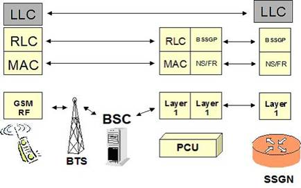

◉ A família de padrões IEEE 802
A IEEE 802 é uma norma que tem como objectivo definir uma padronização para redes locais e
metropolitanas das camadas 1 e 2 (Física e Enlace) do modelo OSI para padrão de redes.
As normas cuidam de diversos tipos de redes como Ethernet, rede sem fio, fibra óptica dentre outros.
IEEE 802 é um estudo dos padrões do (IEEE) Instituto de Engenheiros Electricistas e Electrónico,
que actua em redes de computadores e segundo sua própria definição de redes de área local (LAN)
e redes de área metropolitana (MAN). Também usa o nome de IEEE 802 para se referir às normas
propostas, algumas das quais são bem conhecidas Ethernet (IEEE 802.3) ou Wi-Fi (IEEE 802.1 )
está tentando padronizar o Bluetooth em 802,15.
Centra-se na definição dos níveis mais baixos (de acordo com o modelo de referência OSI , ou
qualquer outro modelo), ou seja, divide o segundo nível, de ligação, em dois sob níveis, o nexo
lógico, incluída no 802.2, e acesso médio. O restante das normas estabelecidas a nível físico,
como a sob camada de acesso à mídia.
A norma IEEE 802 subdivide-se em várias outras normas, assim temos:
➤ IEEE 802.1 – Gerencia de Rede
O IEEE 802.1' é um padrão que especifica a relação entre os padrões IEEE e sua interacção com os modelos OSI, assim como as questões de interligação e administração de redes.
As camadas definidas no modelo OSI são genericamente respeitadas, com várias omissões. As camadas 1 e 2 são geralmente implementadas em conjunto, dando origem às interfaces de rede. Apesar deste tipo de implementação, a distinção entre as camadas 1 e 2 também é, geralmente, bastante clara na prática.
A camada de rede está presente em todas as arquitecturas, contudo, nem sempre com as características apontadas no modelo OSI. Por exemplo, o suporte ao encaminhamento entre tecnologias de ligação lógica e física de diferentes tipos nem sempre é suportado.
➤ IEEE 802.2 – Controle de enlace lógico.
O LLC é um protocolo de camada 2, utilizado pela tecnologia GPRS para o estabelecimento de conexões entre móvel e SGSN (Serving GPRS Support Node). O LLC fica sobre o protocolo RLC na unidade móvel e sobre BSSGP no SGSN, como ilustra a figura abaixo:
As funções do LLC são as seguintes:

• Encapsulamento de unidades de dados (data units) de camadas superiores.
• Entrega de data units para as camadas superiores em sequência correcta.
• Serviços de transmissão de mensagens com ACK ou sem ACK.
• Estabelecimento de conexões virtuais no caso do modo ACK.
• Criptografia e de-criptografia dos campos adicionados pela camada.
➤ IEEE 802.3 Ethernet e especifica a sintaxe e a semântica MAC (Medium Access Control).
O IEEE 802.3 é uma colecção de standards que especificam as camadas física e a sob camada MAC da camada de ligação de dados do Modelo OSI para o protocolo Ethernet, tipicamente uma tecnologia LAN com algumas aplicações WAN. As ligações físicas são estabelecidas entre nodos e/ou dispositivos da infra-estrutura (concentradores, comutadores, routers) por vários tipos de cablagem de cobre ou fibra.
O 802.3 é uma tecnologia que permite suportar arquitecturas de rede IEEE 802.1.
O tamanho máximo de um pacote é de 1518 bytes, embora tenha sido estendido para 1522 bytes para suportar Virtual LAN e informação de prioridades no 802.3ac. Como limite mínimo, nos casos em que as camadas superiores enviam um PDU inferior a 64 bytes, o 802.3 preenche o campo de dados até perfazer os 64 bytes mínimos.
Embora tecnicamente incorrecto, os termos pacote e trama (frame) são frequentemente usados com o mesmo significado. Os standards ISO/IEC 802-3 e ANSI/IEEE 802.3 definem as tramas da sob camada MAC consistindo nos campos de endereço de destino, de origem, o tamanho, os dados, e as sequências de controlo (FCS). O preâmbulo e delimitador de início da trama (SFD) são (tipicamente) considerados juntos como sendo o cabeçalho de uma trama MAC. Este cabeçalho e a trama propriamente dita é que formam o pacote.
➤ IEEE 802.4 – Token bus.
Configuração física linear (bus), isto é, todas as estações se encontram ligadas a um bus comum, no entanto funcionam como se a conexão fosse em anel. Cada estação conhece a identidade das estações anteriores e a seguinte.
A sequência lógica baseia-se na ordem numérica descendente dos endereços.
➤ IEEE 802.5 – Token ring.
Token ring é um protocolo de redes que opera na camada física (ligação de dados) e de enlace do modelo OSI dependendo de sua aplicação. Usa um símbolo (em inglês, token), que consiste numa trama de três bytes, que circula numa topologia em anel em que as estações devem aguardar a sua recepção para transmitir. A transmissão dá-se durante uma pequena janela de tempo, e apenas por quem detém o token.
Este protocolo foi descontinuado em detrimento de Ethernet e é utilizado actualmente apenas em infra-estruturas antigas
➤ IEEE 802.6/7 – MANs de Banda Larga.
MAN (Metropolitan Area Network), também conhecida como MAN é o nome dado às redes que ocupam o perímetro de uma cidade. São mais rápidas e permitem que empresas com filiais em bairros diferentes se conectem entre si.
A partir do momento que a internet atraiu uma audiência de massa, as operadoras de redes de TV por cabo, começaram a perceber que, com algumas mudanças no sistema, elas poderiam oferecer serviços de Internet de mão dupla em partes não utilizadas do espectro. A televisão a cabo não é a única MAN. Os desenvolvimentos mais recentes para acesso à internet de alta velocidade sem fio resultaram em outra MAN, que foi padronizada como IEEE 802.16.
➤ IEEE 802.8 – (Fibra óptica)
Fibra óptica é um pedaço de vidro ou de materiais de polímeros com capacidade de transmitir luz. Tal filamento pode apresentar diâmetros variáveis, dependendo da aplicação, indo desde diâmetros ínfimos, da ordem de micrómetros (mais finos que um fio de cabelo) até vários milímetros.
A fibra óptica foi inventada pelo físico indiano Narinder Singh Kapany. Há vários métodos de fabricação de fibra óptica, sendo os métodos MCVD, VAD e OVD os mais conhecidos.
➤ IEEE 802.9 – Integração de Redes Locais.
Em computação, rede de área local (ou LAN, acrónimo de local area network) é uma rede de computador utilizada na interligação de equipamentos processadores com a finalidade de troca de dados. Um conceito mais definido seria: é um conjunto de hardware e software que permite a computadores individuais estabelecerem comunicação entre si, trocando e compartilhando informações e recursos. Tais redes são denominadas locais por cobrirem apenas uma área limitada (10 km no máximo, quando passam a ser denominadas MANs), visto que, fisicamente, quanto maior a distância de um nó da rede ao outro, maior a taxa de erros que ocorrerão devido à degradação do sinal.
As LANs são utilizadas para ligar estações, servidores, periféricos e outros dispositivos que possuam capacidade de processamento numa casa, escritório, escola e edifícios próximos.
➤ IEEE 802.10 – Segurança em Redes Locais.
IEEE 802,10 é um precedente de características padrão para as funções de segurança que poderia ser usados em redes locais e redes metropolitanas baseadas em IEEE 802.x. 802,10 fornece especificações para a gestão da associação de segurança e controle de acesso, a confidencialidade dos dados e integridade de dados.
O padrão IEEE 802,10 foi retirado em Janeiro de 2004. Segurança para redes sem fio está sendo desenvolvido em 802,11.
O protocolo da Cisco Inter-Switch (ISL) para VLANs em LAN Ethernet e tecnologias semelhantes foi baseada em IEEE 802,10, 802,10 em tal uso tem sido amplamente substituído pelo IEEE 802.1Q.
➤ 802.11 - Lans sem fios.
Uma rede sem fio refere-se a uma rede de computadores sem a necessidade do uso de cabos – sejam eles telefónicos, coaxiais ou ópticos – por meio de equipamentos que usam radiofrequência (comunicação via ondas de rádio) ou comunicação via infravermelho, como em dispositivos compatíveis com IrDA.
O uso da tecnologia vai desde transmissores de rádio como walkie-talkies até satélites artificias no espaço. O seu uso mais comum é em redes de computadores, servindo como meio de acesso à Internet através de locais remotos como um escritório, um bar, um aeroporto, um parque, ou até mesmo em casa, etc.
Sua classificação é baseada na área de abrangência: redes pessoais ou curta distância (WPAN), redes locais (WLAN), redes metropolitanas (WMAN) e redes geograficamente distribuídas ou de longa distância (WWAN).
➤ IEEE 802.15 – WPAN Wireless Personal Area Network (Bluetooth)
Bluetooth é uma especificação industrial para áreas de redes pessoais sem fio (Wireless personal area networks - PANs). O Bluetooth provê uma maneira de ligar e trocar informações entre dispositivos como telemóveis, notebooks, computadores, impressoras, câmaras digitais e consoles de videojogos digitais através de uma frequência de rádio de curto alcance globalmente não licenciada e segura. As especificações do Bluetooth foram desenvolvidas e licenciadas pelo (em inglês) Bluetooth Special Interest Group
➤ IEEE 802.16 - (WIMAX) Redes de Acesso Metropolitano, de Banda Larga sem fio
O padrão IEEE 802.16, completo em Outubro de 2001 e publicado em 8 de Abril de 2002, especifica um interface sem fio para redes metropolitanas (WMAN). Foi atribuído a este padrão, o nome WiMAX (Worldwide Interoperability for Microwave Access/Interoperabilidade Mundial para Acesso de Micro-ondas). O termo WiMAX foi criado por um grupo de indústrias conhecido como WiMAX , cujo objectivo é promover a compatibilidade e interoperabilidade entre equipamentos baseados no padrão IEEE 802.16. Este padrão é similar ao padrão Wi-Fi (IEEE 802.11), que já é bastante difundido, porém agrega conhecimentos e recursos mais recentes, visando a um melhor desempenho de comunicação.
O padrão WiMAX tem como objectivo estabelecer a parte final da infra-estrutura de conexão de banda larga (last mile) oferecendo conectividade para uso doméstico, empresarial e em hotspots (ponto de accesso).
➤ 802.20 - Mobile Wireless Access (Mobile-fi).
Wi-Fi é uma marca registada da Wi-Fi Alliance, que é utilizada por produtos certificados que pertencem à classe de dispositivos de rede local sem fios (WLAN) baseados no padrão IEEE 802.11. Por causa do relacionamento íntimo com seu padrão de mesmo nome, o termo Wi-Fi é usado frequentemente como um sinónimo para a tecnologia IEEE 802.11. O nome é uma abreviação do termo inglês Wireless Fidelity, que significa Fidelidade Sem Fio.
O padrão Wi-Fi opera em faixas de frequências que não necessitam de licença para instalação e/ou operação. Este fato as torna atractivas.
Para se ter acesso à internet através de rede Wi-Fi deve-se estar no raio de acção ou área de abrangência de um ponto de acesso (normalmente conhecido por hotspot) ou local público onde opere rede sem fios e usar dispositivo móvel, como computador portátil, Tablete PC ou PDA